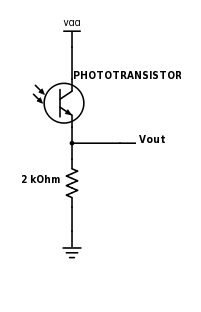
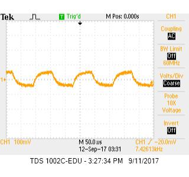
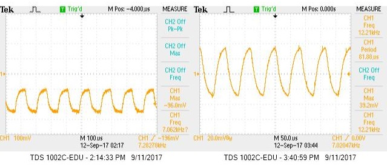
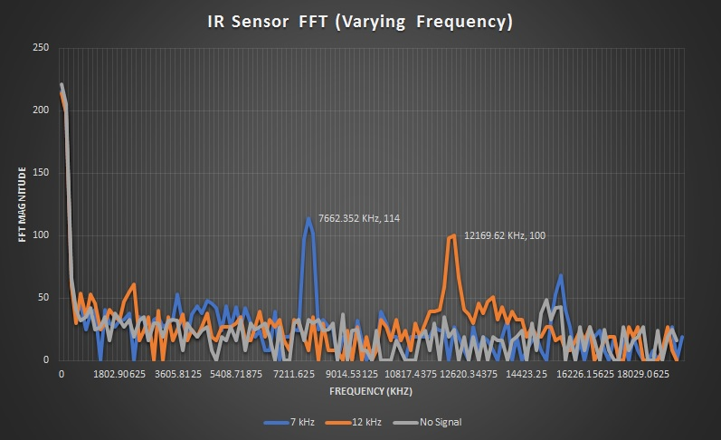
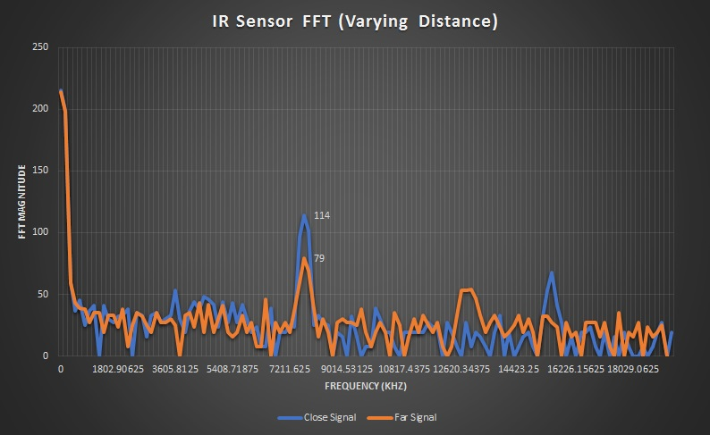

- Arduino Uno
- IR Reciever
- 300 Ohm Resistor
- Treasure Board (Borrowed from TA)
- Miscellaneous Components (wires, screwdriver, etc)
We began by wiring together a circuit to detect varying levels of
infrared light. The sensor in this circuit is a photoresistor which will
pass varying amounts of current through it depending on the amount of infrared
light hitting it. We convert this variable current to a variable voltage by passing
it through a resistor. Below is a simple schematic diagraming the basic circuit
setup. Vout is them used as the analog input for the Arduino.

Once we had our circuit built, we began testing using the treasures. Borrowing a treasure from on of
the TA's, we began by measuring the signal directly using the oscilloscope. By adjusting the
pontentiometers on the treasure board, we were able to change the frequency and intensity of the
infrared signal. Below is a screen capture of the oscilloscope. Note that the signal resembles the
charge and discharge of a capacitor more than a standard sine wave. Because of this, the signal will
contain a range of frequency components, however, the one we are interested in is the main tone. In this case,
the treasure is tuned to about 7.4 kHz.

Now that we had our circuit built and tested the treasure board, we were ready to begin processing the
signals using the Arduino. First, we passed the output of our sensor circuit through a 300 Ohm resistor,
and into an analog input pin on the Arduino. We then wrote a program to read in the data, and perform a
fourier transform to determine the dominant frequency components.

In order to analyze the data from the FFT, you need to know what each bin corresponds to.
This depends on the sampling frequency. In order to spped up the sampling frequency, you
must read the value directly from the ADC. The sampling frequency can then be changed by
changing the clock prescalar for the ADC clock. By default, the ADC clock is 16 MHz with
a default prescalar of 128. Therefore, the ADC clock is 16 MHz/128 = 125 KHz. Since a
conversion takes 13 ADC clock cycles, the default sample rate is 125 KHz/13 = 9600 Hz.
This sampling rate is not quite fast enough for our purpose, so we adjusted the prescalar
to 64 to produce a sampling frequency of approximmately 19.2 KHz. In order to do this, we
set the ADPS register to 110. Note, the below code adjusts the ADC clock prescalar as described,
but we also generate a square wave with half this frequency on I/O pin 11. This was done to check
the sampling frequency since at the time of the lab we were unable to find good documentation on
the ADC clock and sampling frequencies.
/*
Infrared Sensor FFT
*/
#define LOG_OUT 1 // use the log output function
#define FFT_N 256 // set to 256 point fft
#include <FFT.h> // include the library
bool high = true;
void setup() {
Serial.begin(9600); // use the serial port
TIMSK0 = 0; // turn off timer0 for lower jitter
ADCSRA = 0xe5; // set the adc to free running mode
ADCSRA &= ~(bit (ADPS0) | bit (ADPS1) | bit (ADPS2)); // clear prescaler bits
ADCSRA |= bit (ADPS1) | bit (ADPS2); // set prescalar to 64
ADMUX = 0x40; // use adc0
DIDR0 = 0x01; // turn off the digital input for adc0
pinMode(11, OUTPUT);
}
void loop() {
while(1) { // reduces jitter
cli(); // UDRE interrupt slows this way down on arduino1.0
for (int i = 0 ; i < 512 ; i += 2) { // save 256 samples
// debugging purposes
// outputs square wave with f = 1/2 sampling frequency
if (high) {
digitalWrite(11, LOW);
high = false;
}
else {
digitalWrite(11, HIGH);
high = true;
}
while(!(ADCSRA & 0x10)); // wait for adc to be ready
ADCSRA = 0xf5; // restart adc
byte m = ADCL; // fetch adc data
byte j = ADCH;
int k = (j << 8) | m; // form into an int
k -= 0x0200; // form into a signed int
k <<= 6; // form into a 16b signed int
fft_input[i] = k; // put real data into even bins
fft_input[i+1] = 0; // set odd bins to 0
}
fft_window(); // window the data for better frequency response
fft_reorder(); // reorder the data before doing the fft
fft_run(); // process the data in the fft
fft_mag_log(); // take the output of the fft
sei();
Serial.println("start");
for (byte i = 0 ; i < FFT_N/2 ; i++) {
Serial.println(fft_log_out[i]); // send out the data
}
}
}
This code simply dumps the data from all of the even bins to the serial monitor.
We then took this data, and graphed it to see the various frequency components.
Below is the oscilloscope waveform for two different frequencies from the treasure board.
The voltage for these waveforms is taken at the anolog input to the arduino, therefore, it
represents the voltage across the resistor in our infrared sensor circuit.

Below is a graph of the corresponding frequency components for each signal. We included an FFT
for data which was recorded with no treasure signal. This is useful to tell what the background IR
signal is like.

From these FFT's, it is easy to distinguish which signal corresponds to the 7 KHz treasure, and which
one corresponds to the 12 KHz signal. For all signals, there is a large DC component, while most of
the higher frequency components remain under 50. The two larger peaks at 7 KHz and 12 KHz shows that these
two signals have a large contribution from these frequencies.
Once we were able to see the effect of varying signal frequencies on the FFT, we decided to investigate
how the distance to the treasure affected the FFT. Below is another FFT graph showing two separate signals.
The first signal was taken with the treasure approximately 2 inches from the sensor while the second signal was
taken with the treasure approximately 7 inches from the sensor.

While there is still a peak at 7 KHz, the farther signal is much weaker, and the peak is harder to distinguish.